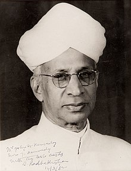

WE STUDENTS OF BHIS GRADE 7 WISH YOU A HAPPY AND BEST TIME WITH US.

Official image of sarvepalli Radhakrishnan 1962
Do you know who is Sarvepalli Radhakrishnan. He is our second President.
He was born on 5 september 1888 same day as teacher's day and on his birth teacher's day is
celebrated. he was second president from 1962 to 1967. Before that he was first vice president
from 1952 to 1962.Radhakrishnan was born as Sarvepalli Radhakrishnayya into a Telugu-speaking family of
Sarvepalli Veeraswami and Sithamma. He was the second born of three siblings in Tiruttani of North Arcot district in the erstwhile
Madras Presidency (now in Tiruvallur district of Tamil Nadu).
For more detailed infromation you can
visit wikipedia page